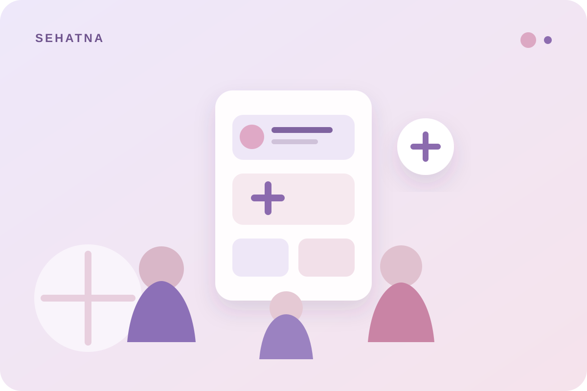
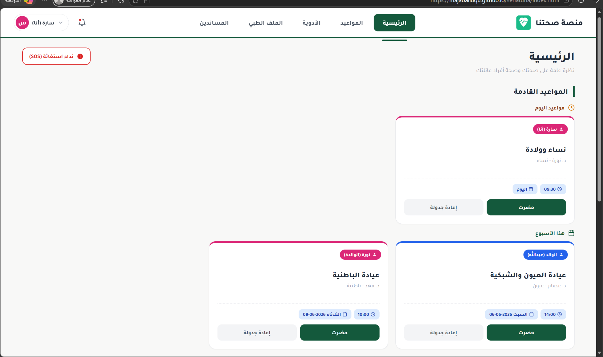
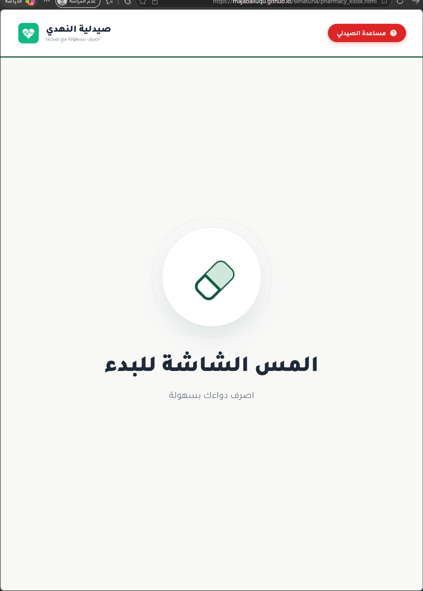
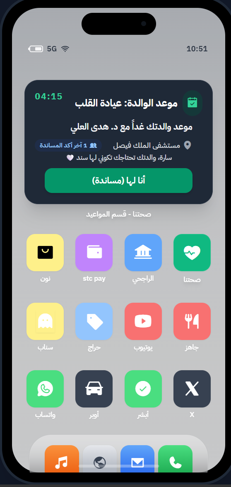
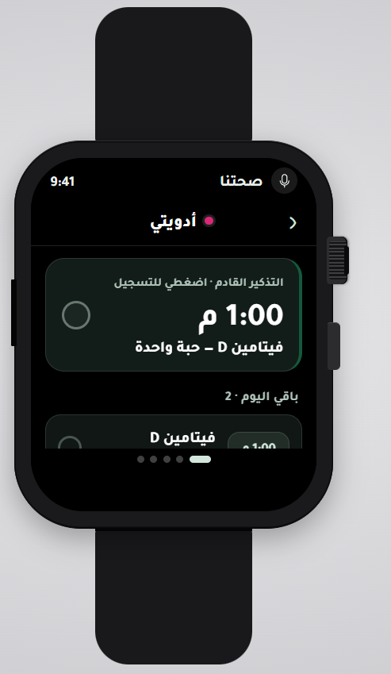

1 — UX/UI · HCI · USER RESEARCH
Sehatna
A family-centered healthcare experience designed to make monitoring medications, appointments, and health information easier.

The project explored a gap in family healthcare: a connected experience where family members can follow a patient’s condition, medications, and appointments instead of relying on scattered reminders and information.
The team collected 150 survey responses and conducted 11 semi-structured interviews with patients and companions. I personally conducted two interviews and contributed to the survey and analysis.
My contribution included competitor benchmarking, interviews, survey analysis, personas, patient and caregiver journey maps, storyboard, design participation, usability evaluation, high-fidelity work, and accessibility-related discussions.
My UI contribution focused especially on medication screens: viewing medications and doses, medication times, confirming intake, adding medication, and viewing taken medications.
I created the Use Case Diagram, Use Case Descriptions, Activity Diagram, and Sequence Diagram from scratch, and worked with the team during implementation.
A visual overview of the product surfaces included in the project.



